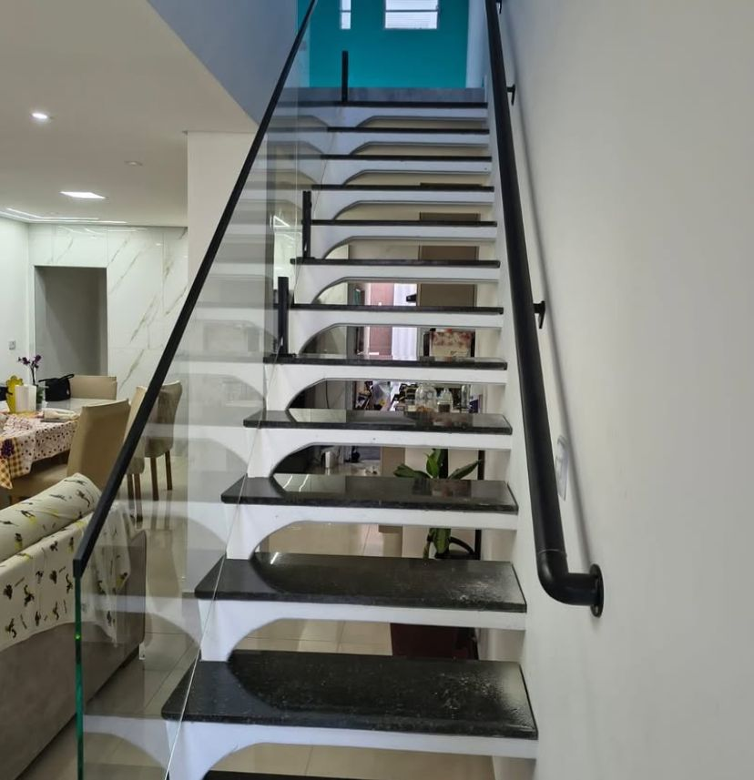

Vidraçaria • Esquadrias • Alumínio • Projetos sob medida
Soluções em vidro e alumínio com acabamento de alto padrão.
Box, espelhos, janelas, portas, guarda-corpos, escadas, pele de vidro, portões e ripados. Atendimento profissional para residências, comércios e obras.
Atlântico Vidros
Especialistas em projetos modernos de vidro e alumínio.
Trabalhamos com soluções sob medida para residências, empresas e obras, oferecendo instalação profissional, acabamento premium e materiais de alta qualidade. Produzimos boxes, espelhos, janelas, portas, guarda-corpo, pele de vidro, esquadrias de alumínio e muito mais.
Catálogo
Produtos e serviços
Organização completa para o cliente encontrar exatamente o que precisa.

Projetos sob medida
Do orçamento à instalação com acabamento profissional.
Trabalhamos com medidas personalizadas, orientação técnica e soluções indicadas para cada ambiente: banheiro, sala, fachada, varanda, área gourmet, loja ou obra.
Quero um orçamentoGaleria real
Fotos de projetos e referências
Clique nas imagens para visualizar em tela cheia.
Vídeos
Veja detalhes dos serviços
Vídeos reais para demonstrar acabamento, movimento das peças e qualidade final.
Sobre a empresa
Atlântico Vidros
A Atlântico Vidros atua com soluções em vidros temperados, esquadrias de alumínio, boxes, espelhos, guarda-corpos, pele de vidro, portas, janelas e acabamentos arquitetônicos. O foco é entregar projetos bonitos, seguros e bem finalizados.
Solicite seu orçamento
Envie fotos, medidas aproximadas e o tipo de serviço desejado. A equipe retorna com orientação e proposta.
Chamar no WhatsAppVer InstagramInstagram oficial: @atlanticovidros1